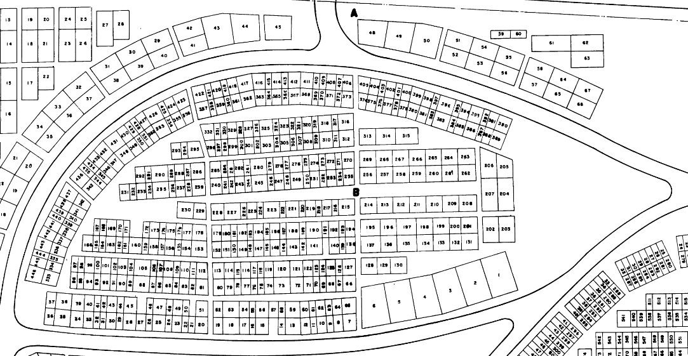
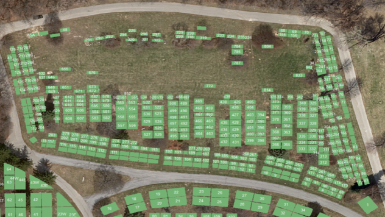

City of Grand Rapids Cemeteries
The purpose of this project was to allow any citizen to view cemeteries online so that they can search for occupants in any of Grand Rapids’ six cemeteries. This project was based on three phases: implementing surveying maps, reconciling polygon data with cemetery records, and finally, visualizing it all in ArcGIS Online.
Survey Map of Woodlawn West
The first phase of the project dealt largely with georeferencing the surveying maps, converting the image to editable features, and cleaning up said features. Though there are six cemeteries, there were eight different maps, each of which being georeferenced to their respective cemetery. After georeferencing, the survey maps were converted into editable features via the Raster to Polygon tool. From there, over 20,000 polygons from eight maps were cleaned up and labeled (e.g. deleting the numbers that were turned into polygons, inserting “blocks” and “lots” metadata into each polygon).
The second phase consisted of reconciling the polygons, which contained the bare metadata of “cemetery”, “block”, and “lot”, with the richer data of an excel spreadsheet derived from the city’s cemetery database. This proved to somewhat of a challenge given that there were multiple occupants per lot, for the old survey maps’s smallest unit was a lot not a grave. With multiple occupants per lot, there were only two options: a many-to-one relate or building a query table in order to do a many-to-one join. I chose the latter. While relating the information would be easiest and is possible in ArcGIS Online, the service’s online search function did not support data from relates, therefore, I had to build a query table.
It should be noted that there are some inherent flaws when working with surveying maps from the mid to late 1900s. Some data that existed in the up-to-date cemetery database was not reflected in the surveying maps, therefore, some lots — and subsequently occupants — do not appear in the final project. Moreover, if certain lots appeared in the surveying maps but did not appear in the excel spreadsheet, the query table operation then deleted empty polygons. Interestingly, even though the map appears to have fewer polygons, there are actually more: in a many-to-one query table join, polygons are stacked on top of each other when sharing the same space.

Before Query Table Join
After Query Table Join
The third phase consisted of getting the data from ArcGIS Desktop to ArcGIS Online. Ultimately, this map had to be readable and searchable, compromising the least amount of data as possible. At first, I wanted all eight of the cemeteries (from the eight surveying maps) in one ArcGIS Online web application, but that proved to be impossible. ArcGIS Online can only host so many features (around 20,000) in one web map or application — I had over 100,000 of them as a result of the Query Table join. Therefore, the web application had to be split up into eight different web applications, otherwise records would have been omitted from the search results. Even given the split, the shapefiles representing the separate cemeteries had to be converted into tile layers in order to let the web application flow smoothly. The tile layers were then configured to route to the original shapefiles.
You can find the full list of the cemeteries on the City of Grand Rapids Cemeteries page, and if you want to test out searching through one of the cemeteries, click here.